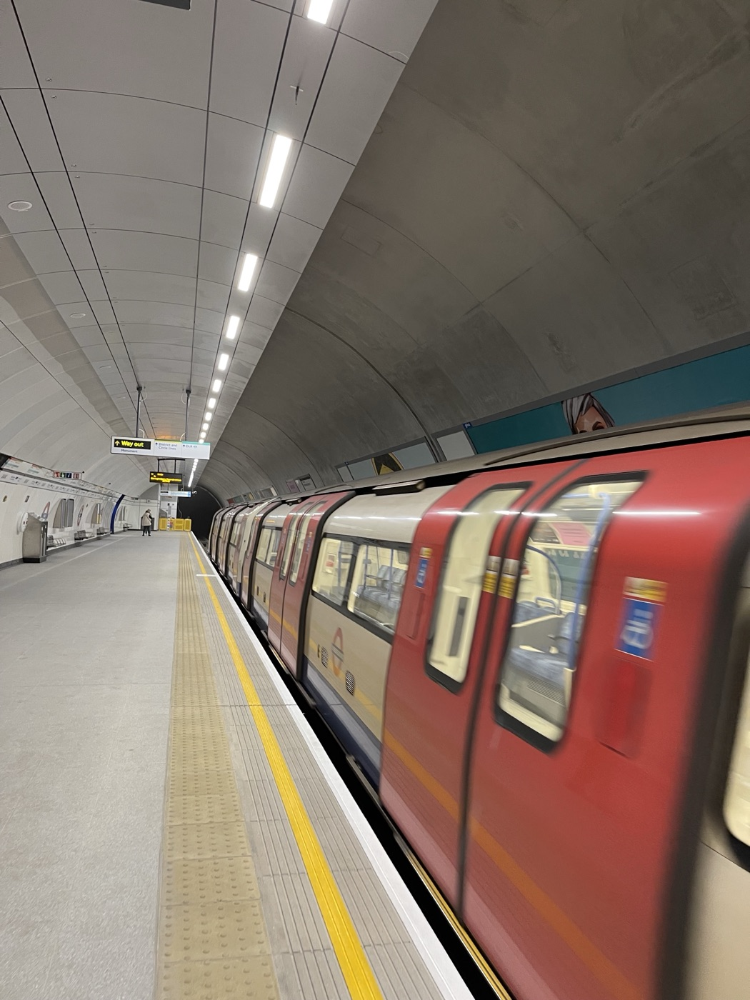
Dall'aereo all'hotel, la metro senza biglietto, le prese a tre poli e cosa fare se qualcosa va storto.
In breve
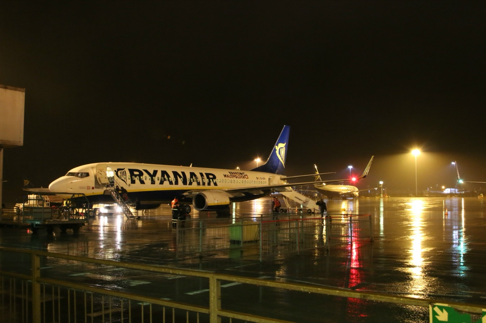
Arrivo e partenza
Atterriamo alle 23:30. La prima notte si dorme all'aeroporto: niente treni a mezzanotte.
Dopo il controllo passaporti si esce dal terminal e si va a piedi all'Hampton by Hilton London Stansted Airport, in Bassingbourn Road, lungo un percorso coperto: l'aeroporto parla di cinque minuti, con le valigie contate dieci o quindici. Non serve la navetta. Realisticamente siamo in camera tra mezzanotte e mezza e l'una.
I cittadini europei con passaporto elettronico possono usare gli eGates, i varchi automatici, dagli 8 anni in su e da 120 cm di altezza, con l'ETA valida. Tra gli 8 e i 17 anni si passa con un adulto: l'adulto va per primo. Vale per tutte e tre le ragazze.
L'arrivo dopo mezzanotte va segnalato all'hotel prima di partire. La mattina dopo c'è tempo: il check-out è alle 12 e la colazione è compresa.
Arrivo e partenza
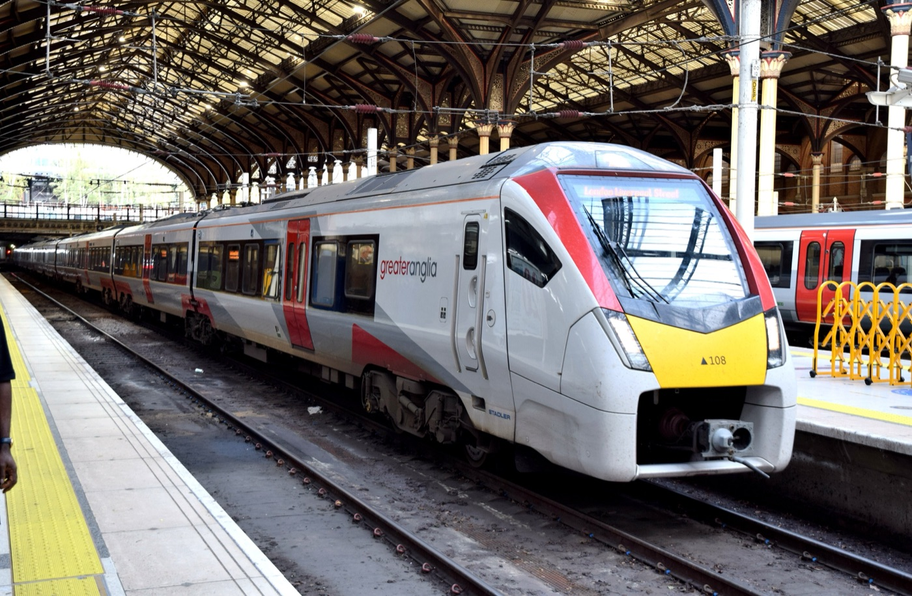
Parte dalla stazione ferroviaria dell'aeroporto e ferma a Tottenham Hale e a Liverpool Street. Da lì all'hotel: una fermata di Hammersmith & City line fino ad Aldgate East, o 12-15 minuti a piedi con le valigie. In tutto, circa un'ora e un quarto.
Dal nuovo orario di ottobre 2026 ferma a Whitechapel, vicino al Royal London Hospital, a circa un chilometro dall'hotel, e poi a Liverpool Street. Una valigia grande fino a 20 kg e un bagaglio a mano a testa. Attenzione: una corsa su due passa da Canary Wharf e non da Whitechapel.
Il check-in all'hotel di Londra è dalle 15. Si arriva in mattinata, si lasciano le valigie alla reception e si parte subito per la giornata.
Arrivo e partenza
Il GroupSave delle ferrovie inglesi (un terzo in meno per 3-9 persone) non vale sullo Stansted Express. Il treno ha una sua offerta per gruppi di 3-4 persone: in otto si possono fare due gruppi da quattro. Le condizioni esatte sono da controllare su stanstedexpress.com al momento di prenotare.
La Family & Friends Railcard costa £35 per un anno, si compra nell'app Railcard e vale sullo Stansted Express: un terzo in meno per gli adulti, fino al 60% per i ragazzi 5-15. Ogni carta copre fino a 4 adulti e 4 ragazzi, con almeno un ragazzo: a noi ne servono due.
Advance: da circa £70. Biglietto normale: circa £147. Normale con due Railcard: circa £92 (più £70 per le carte, una volta sola). Pullman A9: da circa £70-84. Conviene prenotare gli Advance appena escono.
Arrivo e partenza
Il banco bagagli di Ryanair chiude alle 15:50, l'imbarco alle 16:00. Dopo, l'aereo parte senza di noi.
Gratis solo una borsa piccola da 40 × 30 × 20 cm sotto il sedile. Con Priority si aggiunge un trolley da 10 kg (55 × 40 × 20 cm). Il bagaglio da 10 kg senza Priority si consegna al banco prima dei controlli.
A Liverpool Street c'è un deposito bagagli vicino al binario 10, aperto circa 7-23, e ci sono app come Stasher con negozi convenzionati nei dintorni. Prezzi da controllare prima.
Muoversi a Londra
Metro, bus, DLR, Elizabeth line: si paga avvicinando una carta contactless o il telefono al lettore giallo, all'entrata e all'uscita.
Il sistema calcola da solo la tariffa più bassa e, raggiunto il tetto giornaliero, non fa più pagare: si viaggia quanto si vuole. Il tetto settimanale va da lunedì a domenica, quindi a noi non serve: le nostre giornate cadono a cavallo di due settimane.
Tariffe in vigore da marzo 2026; TfL dice che i tetti restano fermi fino a marzo 2027. Ore di punta: dal lunedì al venerdì 6:30-9:30 e 16:00-19:00. Il weekend è tutto fuori punta.
Una carta per persona. Non si paga per due con la stessa carta, ma si può pagare per un altro con una seconda carta o con il telefono.
Sempre la stessa carta, all'entrata e all'uscita, tutto il giorno: niente cambi tra telefono e carta, o il tetto non funziona.
Tenete le carte separate. Un portafoglio con due carte appoggiato sul lettore può far pagare quella sbagliata, o due volte.
Le carte non britanniche spesso fanno pagare una commissione dell'1-3% a ogni pagamento: una carta senza commissioni all'estero fa risparmiare.
Muoversi a Londra
I ragazzi dagli 11 ai 15 anni in visita a Londra hanno lo sconto Young Visitor: il 50% sulle corse e sul tetto giornaliero, in metro, bus, DLR, Overground ed Elizabeth line. Va caricato su una carta Oyster o Visitor Oyster da un addetto, in una stazione della metro: le ragazze devono essere presenti. Non funziona sulle carte di credito.
Esiste la 16+ Zip Oyster per i ragazzi che vivono fuori Londra, ma costa £22, va chiesta settimane prima e per tre giorni costa più di quanto fa risparmiare. Meglio la sua carta contactless, se ce l'ha, o una Oyster normale.
La Visitor Oyster costa £10,50 di attivazione, che non si riprende (il credito avanzato sì). In tre giorni lo sconto fa risparmiare circa £13 a ragazza: il guadagno vero è di pochi euro. Ma alle ragazze di 12 e 13 anni una carta loro serve comunque, perché ognuno deve avere la sua.
Fate attivare lo sconto il sabato, alla prima stazione: a Liverpool Street o ad Aldgate East, chiedendo allo sportello o a un addetto con il gilet arancione. Vale anche sui battelli Uber Boat, che fanno metà prezzo ai ragazzi 5-15.
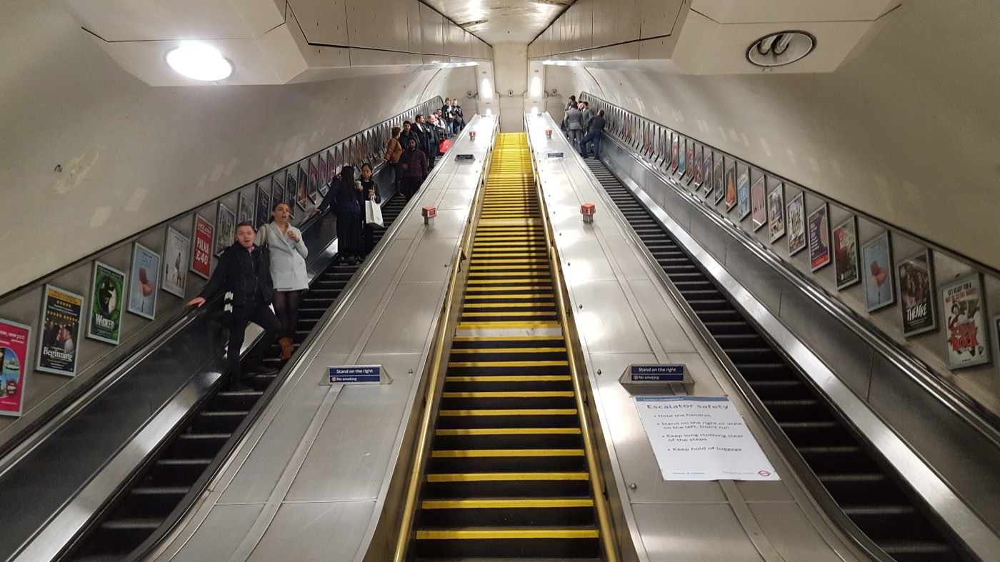
Muoversi a Londra
La metropolitana, the Tube, ha 11 linee, ognuna con il suo nome e il suo colore. I cartelli sulle banchine indicano la direzione con il punto cardinale (Eastbound, verso est; Westbound, verso ovest) o con il capolinea. L'uscita si chiama Way out.
Sulla scala mobile si sta a destra, a sinistra passa chi ha fretta. Davanti alle porte si lascia scendere prima di salire. Sulle banchine strette si sta dietro la linea gialla. Lo zaino si toglie dalle spalle quando c'è folla.
Muoversi a Londra
Schema semplificato e non in scala, con le sole stazioni utili per la guida. La mappa completa è nell'app TfL Go e in tutte le stazioni. Tra Bank e Monument si cambia a piedi, sottoterra.
Muoversi a Londra
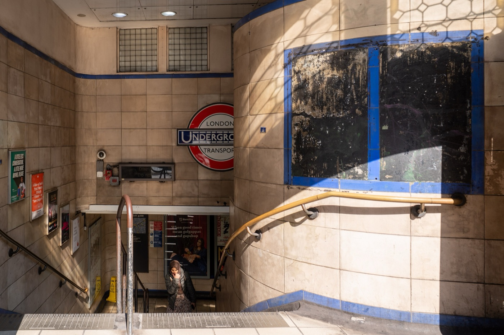
Aldgate East è a pochi minuti a piedi: District e Hammersmith & City. Whitechapel, a circa un chilometro, ha in più l'Elizabeth line, la linea veloce e nuova che attraversa la città da est a ovest. Aldgate, senza East, è un'altra stazione, sulla Circle.
Muoversi a Londra
Con l'Hopper, entro un'ora dalla prima corsa i bus successivi sono gratis, se si usa la stessa carta. Sui bus si tocca il lettore solo salendo. Il piano di sopra, davanti, è il posto migliore per vedere la città.
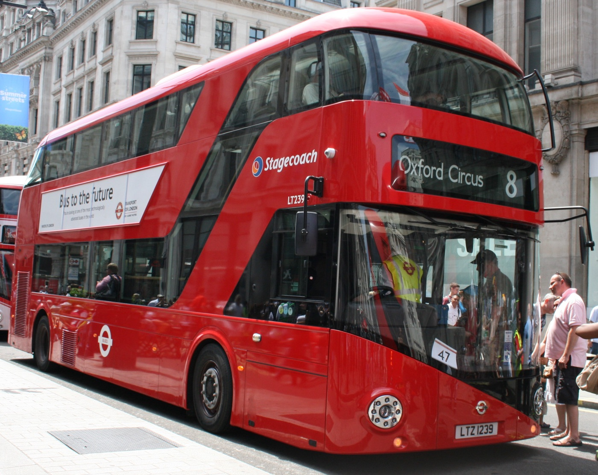
Si paga con il contactless (fino a ottobre 2026: zona centrale £9,90-11,90, centro-est £11,40-13,70) o nell'app. Al molo costa di più. I ragazzi 5-15 pagano metà. Il tetto giornaliero della metro non vale sul fiume, e nel weekend si paga la tariffa di punta.
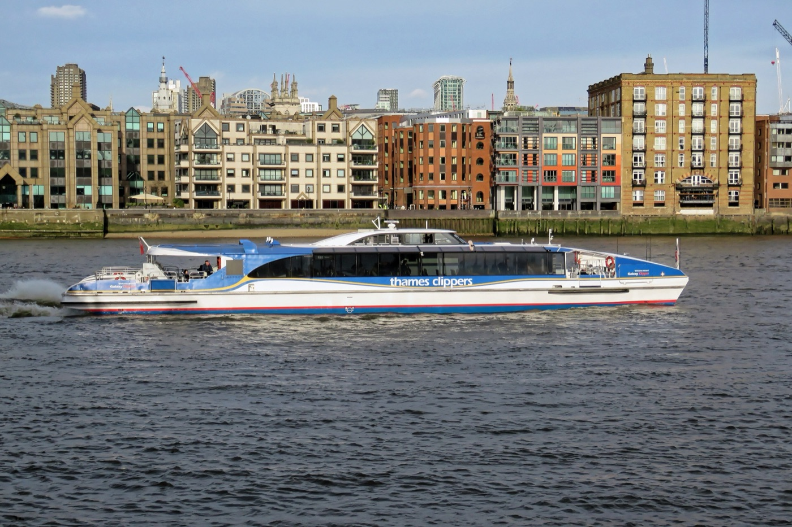
Il biglietto hop-on hop-off di un giorno costa £29,30 online (£14,65 i ragazzi); il Family, 2 adulti e fino a 3 ragazzi, £58,70. Comprato online almeno tre giorni prima ha il 15% di sconto. Prezzi di ottobre 2026: quelli nuovi escono a novembre.
Muoversi a Londra
Treni lunghi e veloci che attraversano Londra sottoterra: da Whitechapel a Liverpool Street, Farringdon, Tottenham Court Road, Bond Street e Paddington, e verso est fino a Canary Wharf. Si paga come la metro.
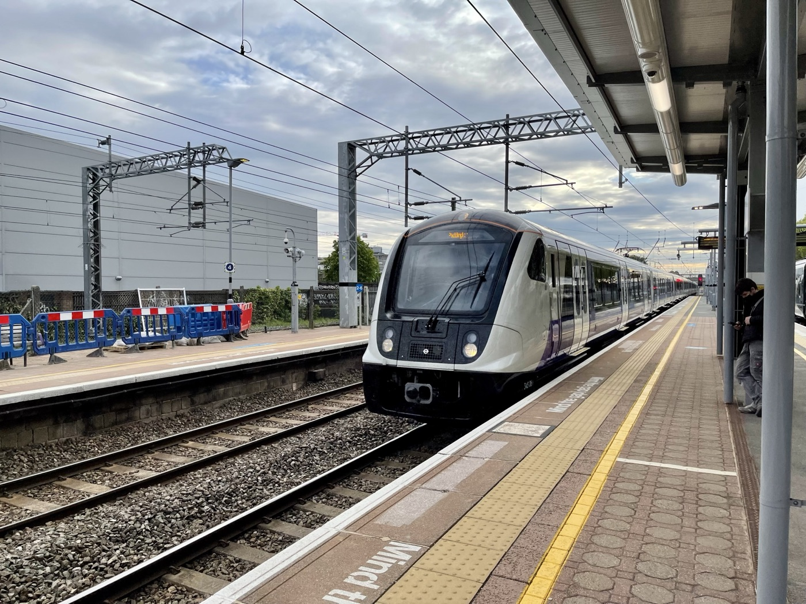
La DLR è il treno senza conducente che va verso Canary Wharf e Greenwich: sedersi davanti, dove non c'è la cabina, piace a tutti. La funivia IFS Cloud Cable Car attraversa il Tamigi vicino all'O2: £7 adulti e £3,50 ragazzi a tratta, andata e ritorno £13,50 e £6,75.
TfL Go è l'app ufficiale, gratis: mappa, treni in tempo reale, lavori e scioperi. Citymapper combina metro, bus, battelli e piedi e dice in che carrozza salire per uscire prima.
I black cab si fermano con la mano quando la luce gialla sul tetto è accesa; i tassisti hanno studiato anni per l'esame di The Knowledge. In otto servono due auto. La mancia si dà arrotondando. Funzionano anche Uber e le altre app.
Informazioni dalla A alla Z
Si chiede nell'app ufficiale UK ETA o su gov.uk/eta, anche per gli altri del gruppo. Di solito la risposta arriva in un giorno, al massimo in tre giorni lavorativi. Vale due anni, o fino alla scadenza del passaporto, ed è legata al passaporto con cui si chiede: si viaggia con quello. Attenzione ai siti non ufficiali, che fanno pagare di più.
Serve il passaporto, valido per tutto il viaggio: la carta d'identità non è accettata. Ogni minore ha il suo passaporto personale.
Una ragazza sotto i 14 anni che viaggia senza almeno un genitore, con un altro adulto, ha bisogno della dichiarazione di accompagnamento, firmata dai genitori in Questura (si chiede online su passaportonline.poliziadistato.it). Dai 14 anni non serve.
Dal 12 aprile 2025 è vietato portare in Gran Bretagna carne e latticini dall'Unione europea: panini con prosciutto o salame, formaggi, latte, anche sottovuoto o comprati al duty free. Alla frontiera li sequestrano, e la multa può arrivare a £5.000. Il panino per il volo, quindi, vegetariano e senza formaggio.
Informazioni dalla A alla Z
Si paga in sterline: £1 vale circa €1,19 (BCE, 16 ottobre 2026). La carta contactless si usa quasi ovunque, anche per un caffè, e molti posti non accettano contanti, come il nostro hotel di Londra. Qualche sterlina in tasca serve solo per le piccole cose. Sulle monete nuove c'è il profilo di Carlo III, su quelle vecchie Elisabetta: valgono tutte e due.
Al ristorante spesso il conto ha già un servizio del 12,5% (service charge), soprattutto per i gruppi: se c'è, non si aggiunge altro. È facoltativo e si può chiedere di toglierlo. Se non c'è, si lascia il 10-15%. Al pub non si lascia mancia al bancone, e nemmeno al takeaway. Al taxi si arrotonda.
Si ordina e si paga al bancone, anche il cibo, dicendo il numero del tavolo. Molti pub accolgono le famiglie con i ragazzi solo fino a una certa ora: in otto, meglio chiedere o prenotare.
Dividere il conto per otto carte al tavolo si può, ma è lento. Più semplice: paga uno per tutti e poi si fanno i conti tra famiglie, oppure si chiede subito il conto separato per famiglia (Can we split the bill in two, please?).
Informazioni dalla A alla Z
Tipo G, con tre spinotti rettangolari, 230 volt come da noi. Servono gli adattatori: uno a testa, o una ciabatta italiana con un solo adattatore. Le prese inglesi hanno un interruttore: va acceso.
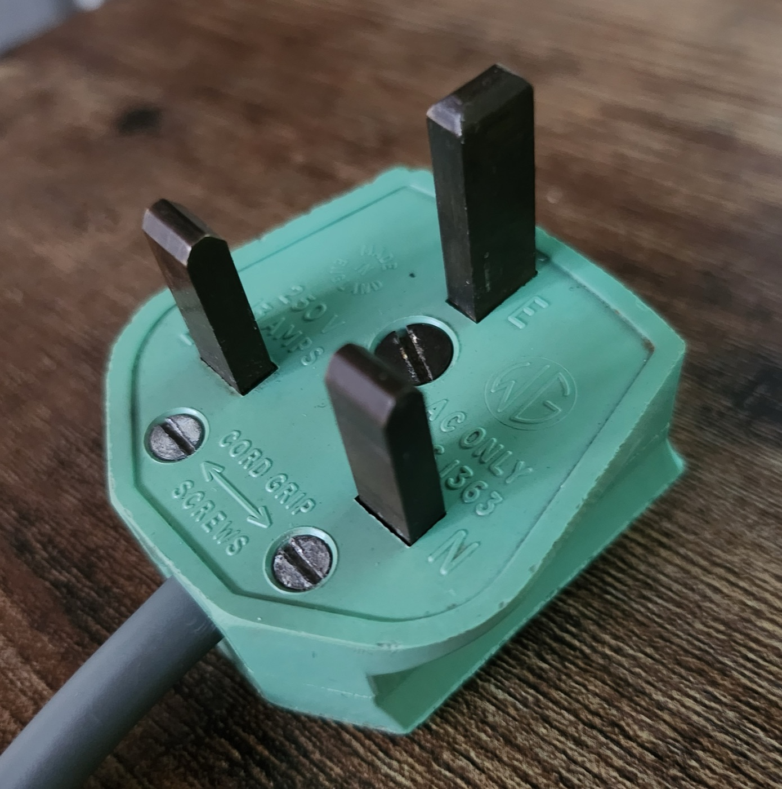
Il Regno Unito non è più nel roaming europeo: secondo le notizie del 2025-26 TIM, WindTre e Iliad non lo trattano più come l'Europa, e per gli altri operatori non è chiaro. Controllate con il vostro operatore prima di partire, o comprate una eSIM per il viaggio. Wi-Fi gratis in hotel, nei musei e in molte stazioni.
Quella del rubinetto si beve, e al ristorante la tap water è gratis. Con la borraccia: l'app Refill segna i posti dove riempirla gratis, e in città ci sono più di cento fontanelle pubbliche, anche nelle stazioni ferroviarie.
Gratis in tutte le grandi stazioni ferroviarie, come Liverpool Street, e nei musei. Quasi nessuna stazione della metro ne ha. Il trucco: andare prima di uscire dal museo.
Informazioni dalla A alla Z
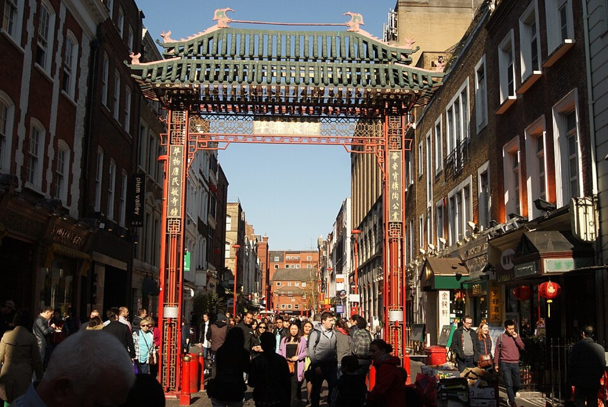
I borseggiatori lavorano nelle vie turistiche e sui mezzi. In più, a Londra ci sono ladri in bici o motorino che strappano il telefono di mano salendo anche sul marciapiede: su Oxford Street per terra c'è scritto Mind the Grab. Telefono lontano dal bordo della strada, "Trova il mio iPhone" attivo, passaporti nella cassaforte dell'hotel e una fotocopia con sé.
I grandi negozi la domenica possono aprire solo sei ore di fila tra le 10 e le 18: di solito 12-18 o 11-17, e fino a mezzogiorno spesso si guarda e basta. I negozi piccoli, le farmacie e i negozi delle stazioni non hanno limiti.
Nei nostri giorni non ci sono festività: tutto è aperto con orario normale. Il Capodanno cinese cade sabato 6 febbraio 2027, anno della Capra. A Londra la grande parata si fa di solito una domenica, da Trafalgar Square a Chinatown: il programma 2027 non è ancora uscito. Quel weekend Chinatown e Soho saranno pieni.
Registrate il viaggio su Dove siamo nel mondo o nell'app Viaggiare Sicuri della Farnesina: in caso di emergenza sanno che siete lì. Il livello di allerta per terrorismo nel Regno Unito è "severo": più controlli in stazioni, aeroporti e posti affollati.
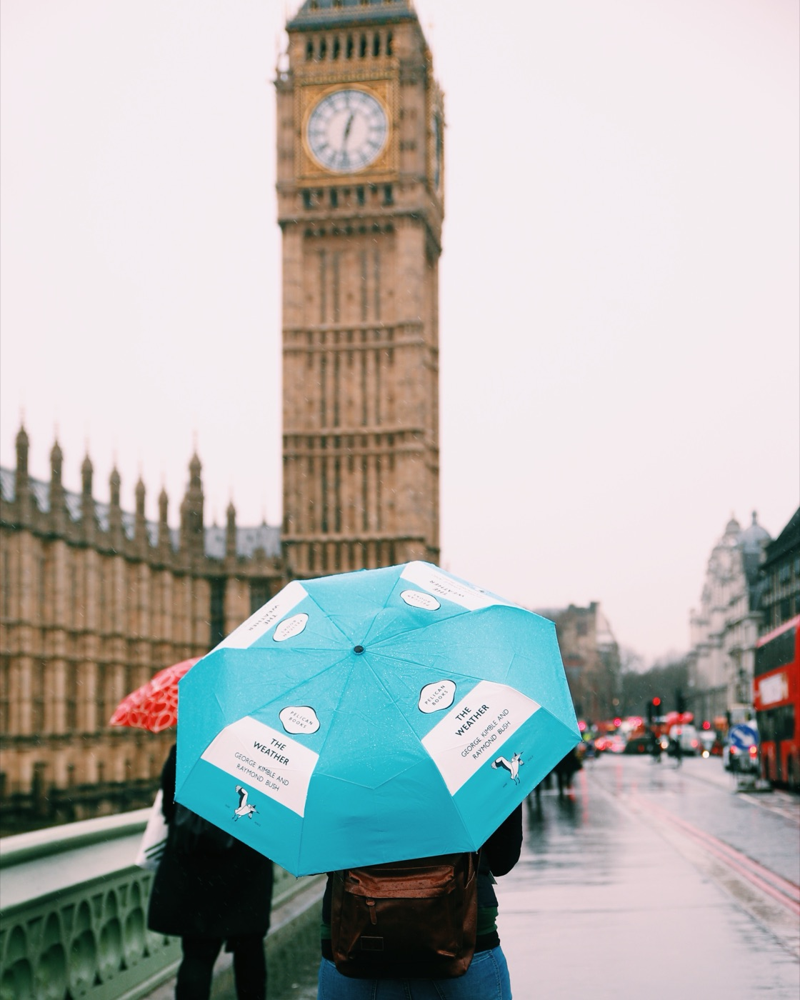
Informazioni dalla A alla Z
Giacca calda e impermeabile, ombrello pieghevole, scarpe comode che non temono l'acqua (si cammina tanto), strati da togliere nei musei e in metro, dove fa caldo, cappello e guanti. Adattatori tipo G, una batteria per il telefono, una borraccia. E uno zainetto che stia nella misura Ryanair, 40 × 30 × 20 cm.
Medie del Met Office 1991-2020. Il tramonto alle 17 aiuta a scegliere l'ora giusta per i panorami: il London Eye e lo Sky Garden verso le 16:15.
I nostri dati di viaggio
Bari 21:35 → Londra Stansted 23:30 (ora inglese). Durata 2 ore e 55 minuti.
Londra Stansted 16:30 → Bari 20:20 (ora italiana). Durata 2 ore e 50 minuti.
Siamo due famiglie con due prenotazioni gemelle, volo e hotel: ognuno ha i suoi codici e la sua carta d'imbarco. I codici di prenotazione non sono in questa guida, che è pubblica: teneteli nell'app Ryanair e nella mail.
I nostri dati di viaggio
Una notte, da venerdì 5 a sabato 6. Check-in dalle 15, check-out entro le 12, colazione compresa. Camera familiare con letto queen e divano letto. Si paga in hotel; accetta anche contanti. L'arrivo verso mezzanotte va segnalato.
Tre notti, da sabato 6 a martedì 9. Check-in dalle 15, check-out entro le 11, colazione compresa. Camere quadruple con due letti queen, bollitore e cassaforte. Si paga in hotel, solo con la carta: niente contanti. Nessun parcheggio.
In tutti e due gli hotel servono un documento con foto e la carta di credito della prenotazione. Le prenotazioni si gestiscono da Booking.com con il numero di prenotazione e il PIN, che sono nella mail di conferma.
Hotel di Stansted fino al 31 gennaio 2027, hotel di Londra fino al 1° febbraio 2027, alle 23:59 ora inglese. Dopo, Stansted fa pagare tutto e Londra la prima notte.
I nostri dati di viaggio
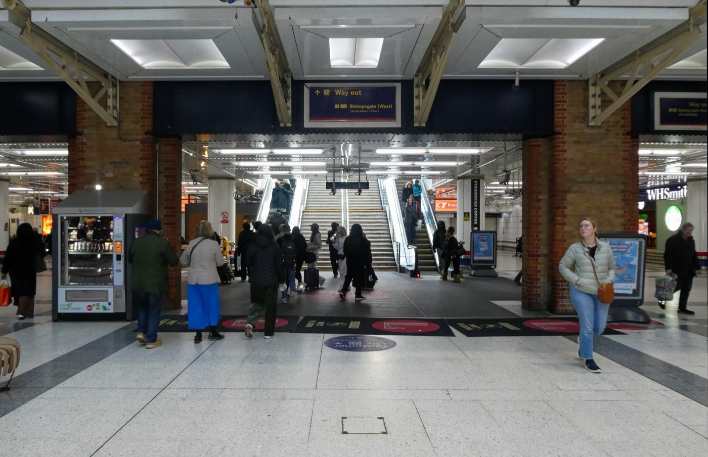
Liverpool Street, dove arriva lo Stansted Express: la prima stazione londinese del viaggio.
Salute
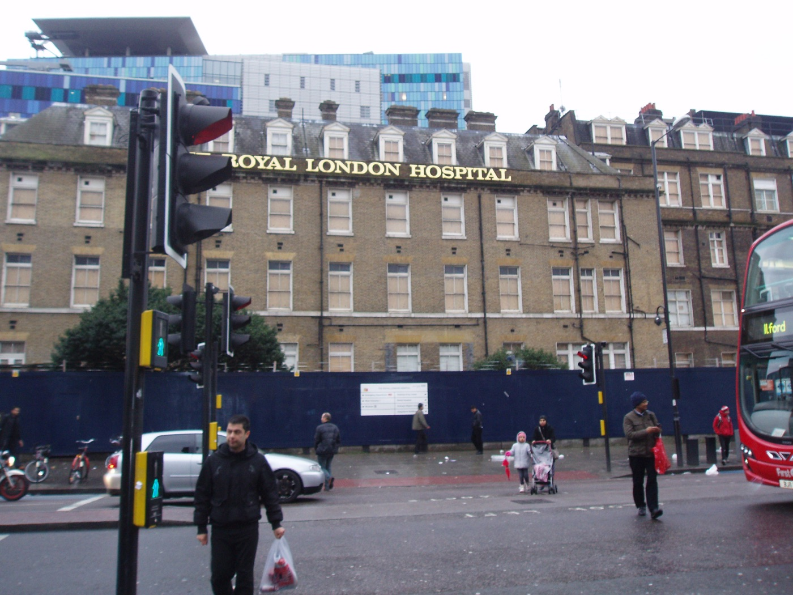
La tessera sanitaria italiana vale anche nel Regno Unito: portatela, tutti.
Sul retro della tessera sanitaria c'è la TEAM, la tessera europea. Nonostante la Brexit, in Inghilterra copre le cure che diventano necessarie durante il viaggio, anche per malattie che si avevano già, alle stesse condizioni dei residenti: per esempio si paga il ticket sulle ricette. Non copre le cure private e il rientro in Italia: per questo serve un'assicurazione di viaggio. Il pronto soccorso è gratis per tutti.
Portate le vostre, nelle confezioni originali: alcune che da noi si comprano liberamente lì vogliono la ricetta. Il paracetamolo si vende in confezioni da 16 compresse al supermercato e da 32 in farmacia.
Emergenze
È il posto giusto per passaporti persi o rubati e documenti di emergenza. Centralino +44 20 7936 5900. Solo per emergenze gravi fuori orario: +44 7850 752895 (lun-ven 18-22, sab-dom 9-22).
Si occupa dei rapporti tra i due Paesi: per i servizi ai cittadini si va al Consolato.
Prima la denuncia alla polizia, anche online, poi il Consolato per il documento di viaggio provvisorio. Una foto del passaporto sul telefono e una fotocopia in valigia fanno risparmiare ore.
Budget
Prezzi di ottobre 2026. La metro spesso costa meno del tetto: molti luoghi sono a piedi dall'hotel.
Stime nostre, non prezzi ufficiali. Una giornata con un'entrata a pagamento, pranzo al pub e cena: circa £80-120 a testa, hotel escluso.
Sono nei capitoli dei quartieri, con il totale per noi 8. Molti grandi musei sono gratis: British Museum, National Gallery, Natural History, V&A, Science Museum. Al cambio di ottobre 2026, £100 sono circa €118.
Crediti fotografici
Foto da Wikimedia Commons, pubblicate con licenze Creative Commons o in pubblico dominio. Mappe: Esri, HERE, Garmin e i contributori di OpenStreetMap. Linee della metro: OpenStreetMap.
Appunti